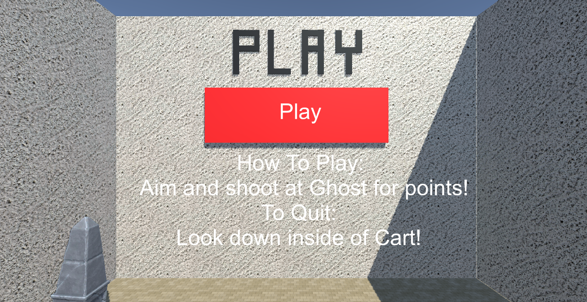
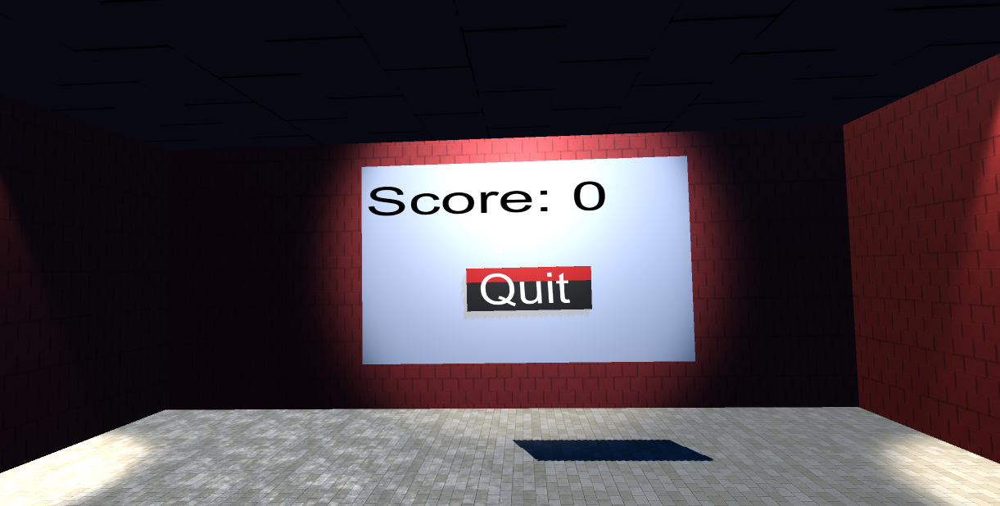

Screens
The Main Menu (above) is the first screen the user will see upon opening the VR experience. It only includes a Play button, which allows the user to begin the game.
The Quit Menu (above) displays the score and returns the user to the Main Menu.
Navigation
The user is able to select items from the menus by hovering over the item (looking at it) and waiting for the red color to cross the item (approximately 5 seconds).